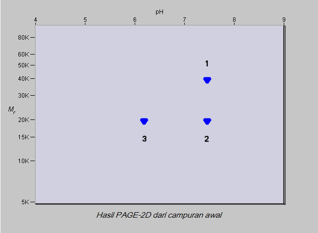
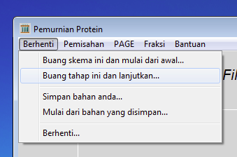
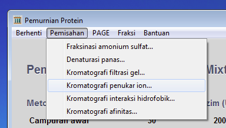
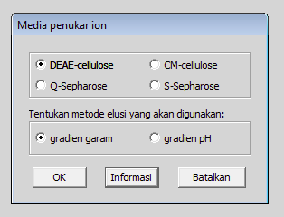

kembali ke awalnya
latihan sebelumnya
latihan berikutnya
kembali ke awalnya
latihan sebelumnya
latihan berikutnya
Latihan 3 dari 6
Kromatografi Penukar Ion dengan Campuran yang Mengandung Tiga Protein
Sekarang anda akan mencoba memurnikan protein 2 menggunakan kromatografi penukar ion. Bahan yang akan anda pakai adalah DEAE-cellulose. DEAE- adalah singkatan dari diethylaminoethyl-, suatu gugus amino tersier yang bermuatan positif kecuali pada pH tinggi. Maka kolom berisi bahan yang bermuatan positif ini akan dapat mengikat protein-protein yang bermuatan negatif. Anda harus berpikir dengan hati-hati tentang titik isoelektrik (pI) suatu protein dan nilai pH bufer dimana protein itu terlarut. Jika pH bufer sama dengan pI protein, maka protein itu tidak bermuatan secara netto (bukan 'tidak bermuatan' tetapi jumlah muatan positif sama dengan jumlah muatan negatif sehingga 'tidak bermuatan secara netto'). Jika protein terlarut dalam bufer ber-pH lebih rendah dibandingkan pI protein maka proton-proton dalam bufer itu akan berikatan dengan protein itu sehingga muatan netto pada protein tersebut positif. Sebaliknya, jika protein terlarut dalam bufer ber-pH lebih tinggi dibandingkan pI protein maka protein itu akan kehilangan proton sehingga muatan netto pada protein tersebut negatif. Konsep ini penting bila anda ingin mengerti bagaimana protein-protein berinteraksi dengan bahan kromatografi penukar ion. Gambar di bawah ini menunjukkan hasil elektroforesis gel dua dimensi campuran yang sedang diteliti. Perhatikan sekali lagi gambar berikut.

Seandainya campuran protein ini dimasukkan ke dalam kolom berisi DEAE-cellulose pada pH 7 - protein-protein apa saja yang akan diikat pada kolom ini?
Protein-protein apa saja yang akan diikat pada pH 8?
Protein-protein apa saja yang akan diikat pada pH 6?

Sekarang ujilah prediksi anda. Jika belum dilakukan maka klik pada kata Berhenti di baris abu-abu dan memilih Buang tahap ini dan lanjutkan.

Kemudian klik pada kata Pemisahan dan pilih Kromatografi Penukar Ion ...
 Klik pada pilihan DEAE-cellulose dan gradien garam. Kemudian klik pada tombol OK.

Klik dalam kotak putih dan ketik 7.0 (atau pakai tombol pengarah) dan kemudian klik pada tombol OK.
 Untuk melepaskan protein yang terikat pada kolom anda harus mencuci kolom dengan garam terlarut dalam bufer. Jika konsentrasi larutan ini meningkat secara perlahan maka protein-protein akan dielusi menurut muatan nettonya.
Untuk melepaskan protein yang terikat pada kolom anda harus mencuci kolom dengan garam terlarut dalam bufer. Jika konsentrasi larutan ini meningkat secara perlahan maka protein-protein akan dielusi menurut muatan nettonya. Anda harus menentukan konsentrasi awal dan akhir. Masukkan nilai 0.0 molar untuk konsentrasi awal dan 0.5 molar untuk konsentrasi akhir (jika nilai yang muncul tidak sama dengan nilai itu). Sekarang klik pada tombol OK.
Sekali lagi, hasil pemisahan campuran protein tersebut pada kondisi yang anda pilih akan terlihat. Perhatikan profil elusi. Absorbsi tiap fraksi diukur pada panjang gelombang 280 nm serta konsentrasi garam dalam tiap fraksi. Garam mulai keluar dari kolom dalam fraksi 32, maka apa saja yang terdapat dalam fraksi sebelumnya adalah protein-protein yang tidak terikat pada kolom tetapi langsung dicuci keluar. Berapa puncak yang terdapat pada profil elusi? Periksalah protein-protein dalam tiap puncak dengan elektroforesis gel poliakrilamida dua dimensi. Protein apa saja yang terdapat pada masing-masing puncak dari tiga jenis protein yang tercampur pada campuran awal? Apakah hasil ini sesuai dengan prediksi anda?
Klik pada kata Berhenti di baris abu-abu dan pilih Buang tahap ini dan lanjutkan. Kemudian ulangilah percobaan ini pada pH 8 dan 6. (Mungkin anda harus mengubah konsentrasi garam akhir agar ketiga-tiga protein terelusi.) Apa perbedaan antara hasil ketiga percobaan ini? Coba jelaskan perbedaan ini!
Apakah protein 2 ini dapat dimurnikan dalam satu tahap dengan memakai kromatografi filtrasi gel atau kromatografi penukar ion? Dapatkah anda memurnikan protein 2 dari campuran ketiga protein ini dengan menggunakan kedua metode yang sudah anda coba?
Apakah urutan metode-metode yang dipakai akan menyebabkan perbedaan terhadap kemurnian protein 2?
Cobalah memurnikan protein 2.